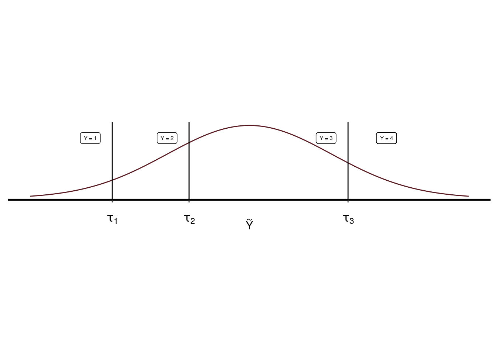
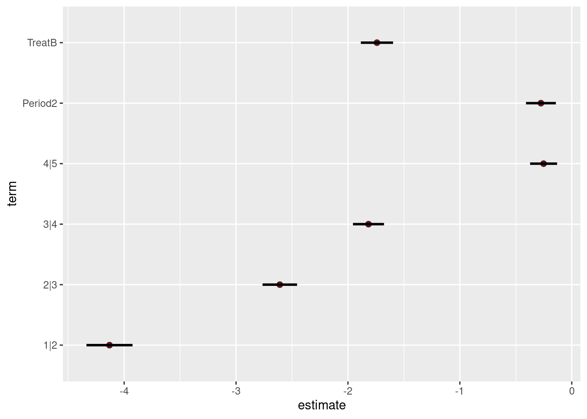
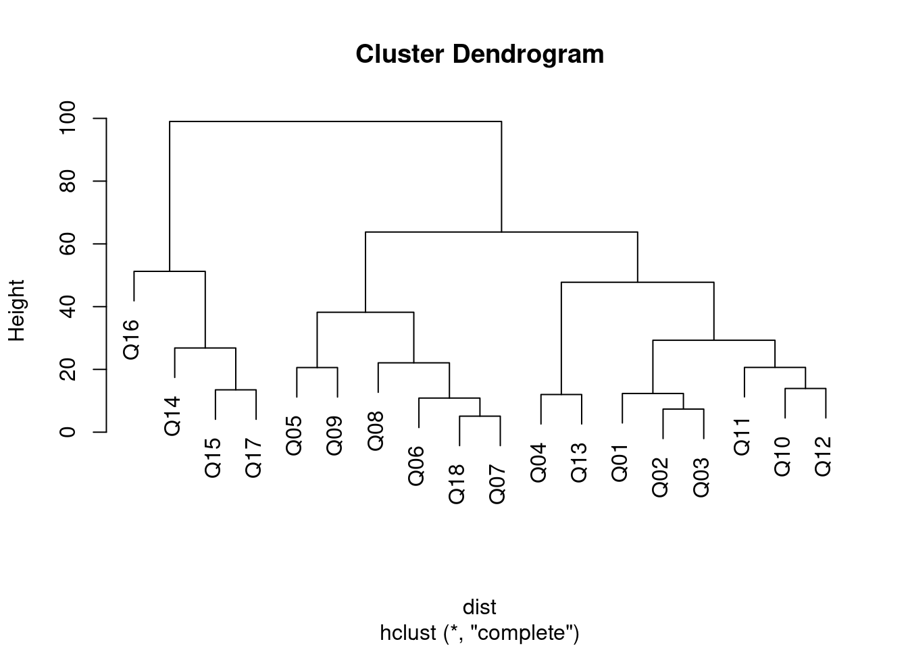
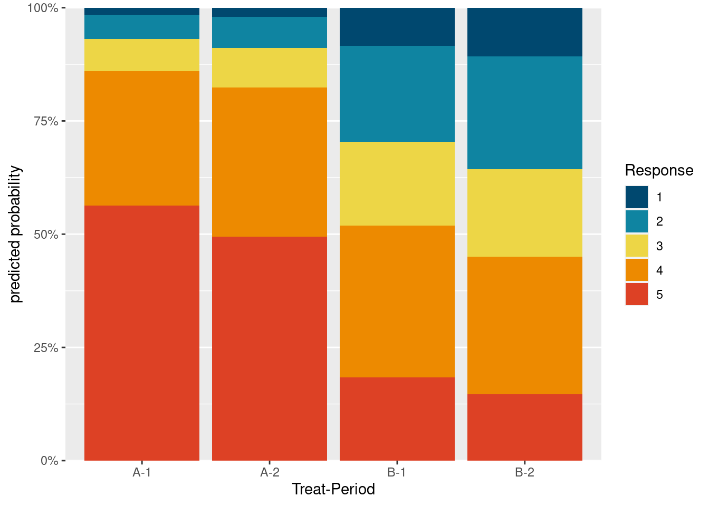
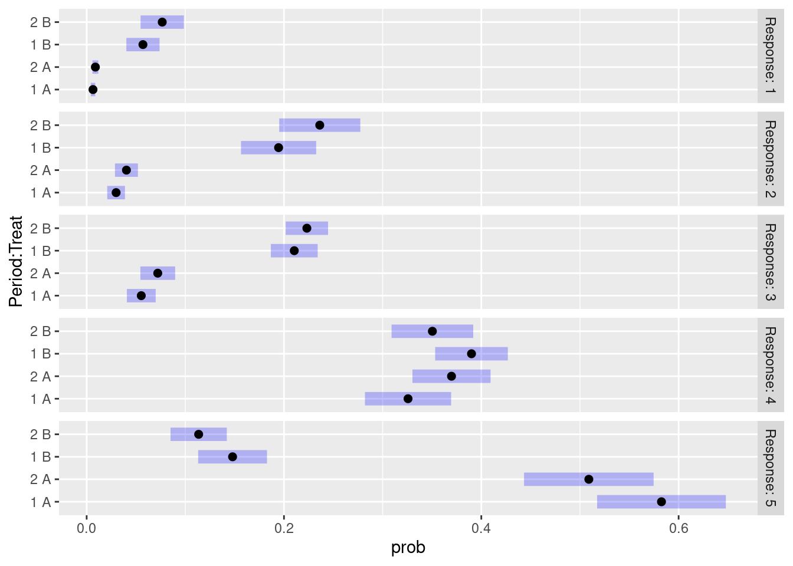

Regresión ordinal
Introducción
El test de Likert es una escala ordinal. Tratar las respuestas a un test de Likert como si fueran cuantitativas como se hizo en el análisis de la varianza del apartado anterior no es correcto por las siguientes razones:
Los niveles de respuesta pueden no ser equidistantes: la distancia entre un par de opciones de respuesta puede no ser la misma para todos los pares de opciones de respuesta. Por ejemplo, la diferencia entre “Muy en desacuerdo” y “En desacuerdo” y la diferencia entre “De acuerdo” y “Muy de acuerdo” es de un nivel, pero psicológicamente puede ser percibida de forma diferente para cada sujeto.
La distribución de las respuestas ordinales puede ser no normal. En particular esto sucederá si hay frecuencias altas de respuesta en los extremos del cuestionario.
Las varianzas de las variables no observadas que subyacen a las variables ordinales observadas pueden diferir entre grupos, tratamientos, periodos, etc.
En Liddell y Kruschke (2018) se han analizado los problemas que puede ocasionar tratar datos ordinales como si fueran cuantitativos constatando que se pueden presentar las siguientes situaciones:
- Se pueden encontrar diferencias significativas entre grupos cuando no las hay: Error tipo I.
- Se pueden obviar diferencias cuando en realidad sí existen: Error tipo II.
- Incluso se pueden invertir los efectos de un tratamiento.
- También puede malinterpretarse la interacción entre factores.
Todos estos problemas pueden ser tratados con la regresión ordinal.
Variantes de la regresión ordinal.
Según Bürkner y Vuorre (2019) hay tres clases de regresión ordinal:
- Regresión ordinal acumulativa.
- Regresión ordinal secuencial.
- Regresión ordinal adyacente.
Nos centraremos en la primera ya que es el más habitual y adecuada para nuestro caso.
El modelo acumulativo, CM, presupone que la variable ordinal observada, \(Y\), proviene de la categorización de una variable latente (no observada) continua, \(\tilde{Y}\). Hay \(K\) umbrales \(\tau_k\) que particionan \(\tilde{Y}\) en \(K + 1\) categorías ordenadas observables (ver Figura 1). Si asumimos que \(\tilde{Y}\) tiene una cierta distribución (por ejemplo, normal) con distribución acumulada \(F\), se puede calcular la probabilidad de que \(Y\) sea la categoría \(k\) de esta forma:
\[Pr(Y = k) = F(\tau_k) - F(\tau_{k-1})\]
Por ejemplo en la Figura 1,
\[Pr(Y = 2) = F(\tau_2) - F(\tau_{1})\]
Si suponemos que, por ejemplo, \(\tilde{Y}\) tiene una relación lineal con dos predictores:
\[\tilde{Y} = \eta + \epsilon = \beta_1 x_1 + \beta_2 x_2 + \epsilon\]
Y que los errores son \(N(0,\sigma^2)\).
Entonces la función de probabilidad acumulada de los errores tendrá la misma forma que la de \(\tilde{Y}\):
\[\mathrm{Pr}(\epsilon \leq z) = F(z)\]
Y podremos calcular la distribución de probabilidad acumulada de \(Y\):
\[\mathrm{Pr}(Y \leq k \mid \eta) = \mathrm{Pr}(\tilde{Y} \leq \tau_k \mid \eta) = \mathrm{Pr}(\eta + \epsilon \leq \tau k) = \mathrm{Pr}(\epsilon \leq \tau_k - \eta) = F(\tau_k - \eta)\]
Por lo que asumiendo la normalidad de los errores:
\[\mathrm{Pr}(Y = k) = \Phi(\tau_k - (\beta_1 x_1 + \beta_2 x_2)) - \Phi(\tau_{k - 1} - (\beta_1 x_1 + \beta_2 x_2))\]
Donde hay que estimar los umbrales y los coeficientes de regresión.
Otra popular elección es suponer que la función acumulada se comporta como una logística. En ese caso, la interpretación de los coeficientes varía y se asemeja a la de la regresión logística. Se parte del supuesto de que el \(logit\) de la función de probabilidad es lineal:
\[logit (P(Y \le k)) = \tau_{k} - \eta = \tau_{k} - (\beta_1 x_1 + \beta_2 x_2)\]
Se puede demostrar que, por ejemplo:
\[\frac{\frac{\mathrm{Pr}(Y \leq k \mid \eta)}{\mathrm{Pr}(Y > k \mid \eta)}}{\frac{\mathrm{Pr}(Y \leq k+1 \mid \eta)}{\mathrm{Pr}(Y > k+1 \mid \eta)}} = \exp(\tau_{k} - \tau_{k+1})\]
Y que 1:
\[\frac{\frac{\mathrm{Pr}(Y \leq k \mid x_i = 1)}{\mathrm{Pr}(Y > k \mid x_i = 1)}}{\frac{\mathrm{Pr}(Y \leq k \mid x_i=0)}{\mathrm{Pr}(Y > k \mid x_i = 0)}} = \exp(-\beta_{i})\]

Preparación
TODO: Comentar o llevar al EDA
Rows: 2,980
Columns: 6
$ Group <fct> AB, AB, AB, AB, AB, AB, AB, AB, AB, AB, AB, AB, AB, AB, AB, A…
$ Period <fct> 1, 1, 1, 1, 1, 1, 1, 1, 1, 1, 1, 1, 1, 1, 1, 1, 1, 1, 2, 2, 2…
$ Treat <fct> A, A, A, A, A, A, A, A, A, A, A, A, A, A, A, A, A, A, B, B, B…
$ Subject <fct> 4, 4, 4, 4, 4, 4, 4, 4, 4, 4, 4, 4, 4, 4, 4, 4, 4, 4, 4, 4, 4…
$ Question <fct> Q18, Q01, Q02, Q03, Q04, Q05, Q06, Q07, Q08, Q09, Q10, Q11, Q…
$ Response <ord> 3, 3, 3, 3, 3, 3, 3, 3, 3, 3, 3, 3, 3, 3, 3, 3, 3, 3, 3, 3, 3…| Group | Period | Treat | Response | ||||
|---|---|---|---|---|---|---|---|
| 1 | 2 | 3 | 4 | 5 | |||
| AB | 1 | A | 2 | 25 | 71 | 203 | 434 |
| AB | 2 | B | 87 | 185 | 121 | 172 | 166 |
| BA | 1 | B | 76 | 174 | 127 | 237 | 138 |
| BA | 2 | A | 2 | 30 | 64 | 345 | 321 |
Modelo de enlace logit acumulado
Vamos a ajustar el modelo con la función de enlace logit:
\[ \text{logit} (P(y_i \leq k) = \log \frac{P(y_i \leq k)}{1 - P(y_i \leq k)} \tag{1}\]
La función de enlace logit acumulada (Ecuación 1) no está definida para \(k = K\), ya que \(1 - P(Y_i \leq K) = 1 - 1 = 0\).
En nuestra escala de Likert tenemos \(K\) = 5 niveles, el modelo mixto que vamos a plantear es el siguiente:
\[ \begin{aligned} \text{logit}(p(y_i \leq k)) &= \tau_k - \beta_1 \text{Period}_i - \beta_2 \text{Treat}_i - \beta_3 \text{Question}_i - u( \text{Subject}_i) \\ i &= 1, \dots n \; \; \; \; \; \; k = 1, \dots, K - 1 \end{aligned} \]
donde \(\tau_k\) es el umbral de la categoría \(k\) y son \(K-1\) = 4 interceptores. Los coeficientes de los efectos fijos, \(\beta_1\), \(\beta_2\) y \(\beta_3\), son independientes, por lo que cada \(\beta_i\) tiene el mismo efecto en los \(K-1\) logits acumulados. El efecto aleatorio, Subject, se presupone que sigue una distribución normal: \(u(\text{Subject}_i) \sim N(0, \sigma_u^2)\).
En esencia lo que estamos haciendo es un modelo en cadena de regresiones logísticas donde la respuesta binaría se corresponde con “menor o igual que cierto nivel frente a mayor que ese nivel”.
En el caso particular de \(K\) = 5, los umbrales \(\tau_k\) se interpretan como:
- \(k\) = 1: log-odds del nivel = 1 vs. 2-5
- \(k\) = 2: log-odds del nivel = 1-2 vs. 3-5
- \(k\) = 3: log-odds del nivel = 1-3 vs. 4-5
- \(k\) = 4: log-odds del nivel = 1-4 vs. 5
Ajuste del modelo.
Su usarán las funciones ordinal::clm y ordinal::clmm que respectivamente permiten ajustar modelos únicamente con efectos fijos o modelos mixtos (que combinan efectos fijos y aleatorios).
Comenzamos con un modelo simple que tiene un único predictor:
\[ \text{logit}(p(y_i \leq k)) = \tau_k - \beta_2 \text{Treat}_i \]
clm_likert_treat <-
clm(
Response ~ Treat,
data = df, link = "logit"
)
summary(clm_likert_treat)formula: Response ~ Treat
data: df
link threshold nobs logLik AIC niter max.grad cond.H
logit flexible 2980 -3966.11 7942.21 5(0) 1.64e-10 3.1e+01
Coefficients:
Estimate Std. Error z value Pr(>|z|)
TreatB -1.7206 0.0731 -23.54 <2e-16 ***
---
Signif. codes: 0 '***' 0.001 '**' 0.01 '*' 0.05 '.' 0.1 ' ' 1
Threshold coefficients:
Estimate Std. Error z value
1|2 -3.97230 0.09678 -41.045
2|3 -2.45446 0.06812 -36.029
3|4 -1.66453 0.05936 -28.042
4|5 -0.10547 0.04946 -2.132El método summary muestra la información resumen. Para su interpretación vamos a seguir Christensen (2018).
El número de condición Hessiano es inferior a \(10^4\) lo que es indicativo de que no hay problemas de optimización 2.
La sección de coeficientes es la más importante. Se muestra la estimación de parámetros, el error “stardard” y la significación estadística de acuerdo al test de Wald 3. Comprobamos que el valor es claramente significativo. Es decir, que los estudiantes han valorado de forma diferente la calidad del subtitulado en ambos vídeos. El estimador de maxima verosimilitud del coeficiente TreatB es -1.72. Siguiendo la deducción de (bruin2011?) podemos, por ejemplo, hacer la siguiente interpretación del significado de este coeficiente referido a dos niveles consecutivos de respuesta:
\[ \begin{aligned} logit (P(Y \le 1)) & = & -3.97 - (-1.72 x_2) \\ logit (P(Y \le 2)) & = & -2.45 - (-1.72 x_2) \end{aligned} \]
Por lo tanto los \(odds\) serían:
\[ \begin{aligned} \frac{P(Y \le 1 | x_2 = B)}{P(Y \gt 1 | x_2 = B)} & = & exp(-3.97)/exp(-1.72) \\ \frac{P(Y \le 1 | x_2 = A)}{P(Y \gt 1 | x_2 = A)} & = & exp(-3.97) \\ \frac{P(Y \le 2 | x_2 = B)}{P(Y \gt 2 | x_2 = B)} & = & exp(-2.45)/exp(-1.72) \\ \frac{P(Y \le 2 | x_2 = A)}{P(Y \gt 2 | x_2 = A)} & = & exp(-2.45) \end{aligned} \]
Y los \(OR\):
\[ \begin{aligned} \frac{P(Y \le 1 | x_2=B)}{P(Y \gt 1 | x_2=B)} / \frac{P(Y \le 1 | x_2=A)}{P(Y \gt 1 | x_2=A)} & = & 1/exp(-1.72) & = & 5.59 \\ \frac{P(Y \le 2 | x_2=B)}{P(Y \gt 2 | x_2=B)} / \frac{P(Y \le 2 | x_2=A)}{P(Y \gt 2 | x_2=A)} & = & 1/exp(-1.72) & = & 5.59 \\ \end{aligned} \]
Se comprueba que el \(OR\) es equivalente en todos los niveles de respuesta al cuestionario. Esta es una de las suposiciones de la regresión ordinal acumulativa. El \(odds\) de respuesta al cuestionario entre los niveles inferiores y superiores a uno dado, \(k\), es 5.59 veces en el subtitulado \(B\) que en el \(A\). Esto indica que el subtitulado \(B\) es percibido por los estudiantes como de peor calidad que el subtitulado \(A\).
Efecto periodo.
Añadimos un segundo predictor para constatar si existe efecto periodo.
\[ \text{logit}(p(y_i \leq k)) = \tau_k - \beta_1 \text{Period}_i - \beta_2 \text{Treat}_i \]
clm_likert_period_treat <-
clm(
Response ~ Period + Treat,
data = df, link = "logit"
)
summary(clm_likert_period_treat)formula: Response ~ Period + Treat
data: df
link threshold nobs logLik AIC niter max.grad cond.H
logit flexible 2980 -3957.88 7927.76 5(0) 1.94e-10 4.1e+01
Coefficients:
Estimate Std. Error z value Pr(>|z|)
Period2 -0.27560 0.06805 -4.05 5.12e-05 ***
TreatB -1.74090 0.07339 -23.72 < 2e-16 ***
---
Signif. codes: 0 '***' 0.001 '**' 0.01 '*' 0.05 '.' 0.1 ' ' 1
Threshold coefficients:
Estimate Std. Error z value
1|2 -4.13085 0.10507 -39.314
2|3 -2.60905 0.07872 -33.143
3|4 -1.81652 0.07073 -25.681
4|5 -0.25187 0.06153 -4.093Vemos que ambos coeficientes son significativos y con signo negativo. Un signo negativo en el efecto periodo está asociado a que la valoración del subtitulado empeora en el segundo periodo independientemente de si se trata del subtitulado correcto o incorrecto. Aplicando el mismo razonamiento del apartado anterior, el \(OR\) del efecto periodo es \(1/exp(-0.28) = 1.32\). Lo que quiere decir que una vez controlado el efecto principal del tratamiento, el subtitulado en el segundo periodo es valorado como de inferior calidad que en el primero. Esto estaría indicando que los estudiantes son más exigentes con el subtitulado en la segunda actividad independientemente de su calidad real.
Podemos comparar ambos modelos con la prueba de razón de verosimilitud y comprobamos que el modelo con efecto periodo reduce la función de verosimilitud y, por lo tanto, debe ser aceptado:
anova(clm_likert_treat, clm_likert_period_treat)Likelihood ratio tests of cumulative link models:
formula: link: threshold:
clm_likert_treat Response ~ Treat logit flexible
clm_likert_period_treat Response ~ Period + Treat logit flexible
no.par AIC logLik LR.stat df Pr(>Chisq)
clm_likert_treat 5 7942.2 -3966.1
clm_likert_period_treat 6 7927.8 -3957.9 16.448 1 5e-05 ***
---
Signif. codes: 0 '***' 0.001 '**' 0.01 '*' 0.05 '.' 0.1 ' ' 1Con la función drop1 se puede realizar este mismo test, razón de verosimilitudes, para cada variable explicativa del modelo controlando las restantes.
drop1(clm_likert_period_treat, test = "Chi")Single term deletions
Model:
Response ~ Period + Treat
Df AIC LRT Pr(>Chi)
<none> 7927.8
Period 1 7942.2 16.45 5e-05 ***
Treat 1 8537.8 612.03 <2e-16 ***
---
Signif. codes: 0 '***' 0.001 '**' 0.01 '*' 0.05 '.' 0.1 ' ' 1Y con la función add1, que hace el test de cada variable explicativa ignorando las restantes:
# Fit the null model first
clm_likert_null <- clm(Response ~ 1, data = df, link = "logit")
add1(clm_likert_null, scope = ~ Period + Treat, test = "Chi")Single term additions
Model:
Response ~ 1
Df AIC LRT Pr(>Chi)
<none> 8541.7
Period 1 8537.8 5.91 0.01504 *
Treat 1 7942.2 601.49 < 2e-16 ***
---
Signif. codes: 0 '***' 0.001 '**' 0.01 '*' 0.05 '.' 0.1 ' ' 1En la Figura 2 se muestran los intervalos de confianza de los parámetros del modelo.

Modelo con interacción entre periodo y subtítulos.
\[ \text{logit}(p(y_i \leq k)) = \tau_k - \beta_1 \text{Period}_i - \beta_2 \text{Treat}_i - \beta_3 \text{Period}_i\text{Treat}_i \]
clm_likert_period_treat_inter <-
clm(
Response ~ Period * Treat,
data = df, link = "logit"
)
summary(clm_likert_period_treat_inter)formula: Response ~ Period * Treat
data: df
link threshold nobs logLik AIC niter max.grad cond.H
logit flexible 2980 -3953.01 7920.03 5(0) 2.15e-10 8.1e+01
Coefficients:
Estimate Std. Error z value Pr(>|z|)
Period2 -0.49179 0.09744 -5.047 4.49e-07 ***
TreatB -1.96046 0.10229 -19.166 < 2e-16 ***
Period2:TreatB 0.42510 0.13638 3.117 0.00183 **
---
Signif. codes: 0 '***' 0.001 '**' 0.01 '*' 0.05 '.' 0.1 ' ' 1
Threshold coefficients:
Estimate Std. Error z value
1|2 -4.24649 0.11182 -37.977
2|3 -2.72823 0.08821 -30.928
3|4 -1.93833 0.08167 -23.732
4|5 -0.36991 0.07308 -5.062anova(clm_likert_period_treat, clm_likert_period_treat_inter)Likelihood ratio tests of cumulative link models:
formula: link: threshold:
clm_likert_period_treat Response ~ Period + Treat logit flexible
clm_likert_period_treat_inter Response ~ Period * Treat logit flexible
no.par AIC logLik LR.stat df Pr(>Chisq)
clm_likert_period_treat 6 7927.8 -3957.9
clm_likert_period_treat_inter 7 7920.0 -3953.0 9.738 1 0.001805 **
---
Signif. codes: 0 '***' 0.001 '**' 0.01 '*' 0.05 '.' 0.1 ' ' 1Vemos que hay evidencia de que existe una interacción entre periodo y subtítulos. Cuando esto sucede se tiende a dar mayor importancia a esta interacción que a los efectos principales de cada factor.
Modelo con efectos mixtos.
Añadimos al modelo a los sujetos como efecto aleatorio.
clmm_likert_period_treat_inter_subject <-
clmm(
Response ~ Period * Treat + (1 | Subject),
data = df, link = "logit"
)
summary(clmm_likert_period_treat_inter_subject)Cumulative Link Mixed Model fitted with the Laplace approximation
formula: Response ~ Period * Treat + (1 | Subject)
data: df
link threshold nobs logLik AIC niter max.grad cond.H
logit flexible 2980 -3655.71 7327.41 635(2507) 3.67e-04 5.8e+02
Random effects:
Groups Name Variance Std.Dev.
Subject (Intercept) 1.278 1.131
Number of groups: Subject 87
Coefficients:
Estimate Std. Error z value Pr(>|z|)
Period2 -0.5985 0.2653 -2.256 0.0241 *
TreatB -2.3926 0.2673 -8.951 <2e-16 ***
Period2:TreatB 0.5705 0.5072 1.125 0.2607
---
Signif. codes: 0 '***' 0.001 '**' 0.01 '*' 0.05 '.' 0.1 ' ' 1
Threshold coefficients:
Estimate Std. Error z value
1|2 -5.0575 0.2154 -23.48
2|3 -3.3828 0.2014 -16.80
3|4 -2.4541 0.1969 -12.46
4|5 -0.5248 0.1909 -2.75Vemos que ahora la interacción periodo y tratamiento no es significativa. Eliminamos la interacción tratamiento y periodo mantenemos el efecto aleatorio de los estudiantes.
clmm_likert_period_treat_subject <-
clmm(
Response ~ Period + Treat + (1 | Subject),
data = df, link = "logit"
)
summary(clmm_likert_period_treat_subject)Cumulative Link Mixed Model fitted with the Laplace approximation
formula: Response ~ Period + Treat + (1 | Subject)
data: df
link threshold nobs logLik AIC niter max.grad cond.H
logit flexible 2980 -3656.34 7326.67 515(2063) 3.65e-04 1.1e+02
Random effects:
Groups Name Variance Std.Dev.
Subject (Intercept) 1.296 1.139
Number of groups: Subject 87
Coefficients:
Estimate Std. Error z value Pr(>|z|)
Period2 -0.31159 0.07204 -4.325 1.53e-05 ***
TreatB -2.10685 0.07998 -26.344 < 2e-16 ***
---
Signif. codes: 0 '***' 0.001 '**' 0.01 '*' 0.05 '.' 0.1 ' ' 1
Threshold coefficients:
Estimate Std. Error z value
1|2 -4.9122 0.1713 -28.668
2|3 -3.2370 0.1533 -21.109
3|4 -2.3079 0.1473 -15.669
4|5 -0.3786 0.1399 -2.706anova(clmm_likert_period_treat_subject, clmm_likert_period_treat_inter_subject)Likelihood ratio tests of cumulative link models:
formula:
clmm_likert_period_treat_subject Response ~ Period + Treat + (1 | Subject)
clmm_likert_period_treat_inter_subject Response ~ Period * Treat + (1 | Subject)
link: threshold:
clmm_likert_period_treat_subject logit flexible
clmm_likert_period_treat_inter_subject logit flexible
no.par AIC logLik LR.stat df
clmm_likert_period_treat_subject 7 7326.7 -3656.3
clmm_likert_period_treat_inter_subject 8 7327.4 -3655.7 1.26 1
Pr(>Chisq)
clmm_likert_period_treat_subject
clmm_likert_period_treat_inter_subject 0.2617Factor preguntas.
Las preguntas se pueden incorporar al modelo como efecto fijo o como efecto aleatorio.
TODO: Comentar las implicaciones que tiene cada variante.
Preguntas como efecto aleatorio.
clmm_likert_period_treat_subject_question <-
clmm(
Response ~ Period + Treat + (1 | Subject) + (1 | Question),
data = df, link = "logit"
)
summary(clmm_likert_period_treat_subject_question)Cumulative Link Mixed Model fitted with the Laplace approximation
formula: Response ~ Period + Treat + (1 | Subject) + (1 | Question)
data: df
link threshold nobs logLik AIC niter max.grad cond.H
logit flexible 2980 -3560.09 7136.19 834(3340) 8.28e-04 1.8e+02
Random effects:
Groups Name Variance Std.Dev.
Subject (Intercept) 1.4546 1.2061
Question (Intercept) 0.3395 0.5827
Number of groups: Subject 87, Question 18
Coefficients:
Estimate Std. Error z value Pr(>|z|)
Period2 -0.32028 0.07286 -4.396 1.1e-05 ***
TreatB -2.23815 0.08226 -27.208 < 2e-16 ***
---
Signif. codes: 0 '***' 0.001 '**' 0.01 '*' 0.05 '.' 0.1 ' ' 1
Threshold coefficients:
Estimate Std. Error z value
1|2 -5.1745 0.2269 -22.801
2|3 -3.4119 0.2121 -16.087
3|4 -2.4161 0.2070 -11.672
4|5 -0.3715 0.2012 -1.847anova(clmm_likert_period_treat_subject, clmm_likert_period_treat_subject_question)Likelihood ratio tests of cumulative link models:
formula:
clmm_likert_period_treat_subject Response ~ Period + Treat + (1 | Subject)
clmm_likert_period_treat_subject_question Response ~ Period + Treat + (1 | Subject) + (1 | Question)
link: threshold:
clmm_likert_period_treat_subject logit flexible
clmm_likert_period_treat_subject_question logit flexible
no.par AIC logLik LR.stat df
clmm_likert_period_treat_subject 7 7326.7 -3656.3
clmm_likert_period_treat_subject_question 8 7136.2 -3560.1 192.48 1
Pr(>Chisq)
clmm_likert_period_treat_subject
clmm_likert_period_treat_subject_question < 2.2e-16 ***
---
Signif. codes: 0 '***' 0.001 '**' 0.01 '*' 0.05 '.' 0.1 ' ' 1En la sección Random effects vemos que la varianza explicada por el efecto aleatorio preguntas es muy inferior a la explicada por los estudiantes. Sin embargo, la comparación entre modelos es altamente significativa.
Preguntas como efecto fijo.
Se ha usado la pregunta 18 como nivel de referencia porque al ser una pregunta sobre la valoración general del subtitulado tiene más interés su comparación con cada pregunta individual.
clmm_likert_period_treat_question_subject <-
clmm(
Response ~ Period + Treat + Question + (1 | Subject),
data = df, link = "logit"
)
summary(clmm_likert_period_treat_question_subject)Cumulative Link Mixed Model fitted with the Laplace approximation
formula: Response ~ Period + Treat + Question + (1 | Subject)
data: df
link threshold nobs logLik AIC niter max.grad cond.H
logit flexible 2980 -3527.39 7102.77 3514(14060) 8.70e-04 5.0e+02
Random effects:
Groups Name Variance Std.Dev.
Subject (Intercept) 1.456 1.207
Number of groups: Subject 87
Coefficients:
Estimate Std. Error z value Pr(>|z|)
Period2 -0.32093 0.07292 -4.401 1.08e-05 ***
TreatB -2.24865 0.08237 -27.299 < 2e-16 ***
QuestionQ01 0.61818 0.21231 2.912 0.00360 **
QuestionQ02 0.53439 0.20777 2.572 0.01011 *
QuestionQ03 0.49715 0.20901 2.379 0.01738 *
QuestionQ04 1.55047 0.21998 7.048 1.81e-12 ***
QuestionQ05 -0.34685 0.20937 -1.657 0.09760 .
QuestionQ06 0.23760 0.20489 1.160 0.24621
QuestionQ07 -0.03830 0.20786 -0.184 0.85380
QuestionQ08 -0.36754 0.20578 -1.786 0.07409 .
QuestionQ09 -0.85754 0.20902 -4.103 4.09e-05 ***
QuestionQ10 0.29798 0.20750 1.436 0.15099
QuestionQ11 0.53886 0.20436 2.637 0.00837 **
QuestionQ12 0.14719 0.20390 0.722 0.47038
QuestionQ13 1.38182 0.21602 6.397 1.59e-10 ***
QuestionQ14 -0.22399 0.20880 -1.073 0.28338
QuestionQ15 -0.36190 0.21315 -1.698 0.08953 .
QuestionQ16 -0.33488 0.22010 -1.521 0.12814
QuestionQ17 -0.16177 0.21180 -0.764 0.44500
---
Signif. codes: 0 '***' 0.001 '**' 0.01 '*' 0.05 '.' 0.1 ' ' 1
Threshold coefficients:
Estimate Std. Error z value
1|2 -5.0211 0.2268 -22.14
2|3 -3.2526 0.2124 -15.31
3|4 -2.2517 0.2079 -10.83
4|5 -0.1984 0.2025 -0.98anova(clmm_likert_period_treat_subject, clmm_likert_period_treat_question_subject)Likelihood ratio tests of cumulative link models:
formula:
clmm_likert_period_treat_subject Response ~ Period + Treat + (1 | Subject)
clmm_likert_period_treat_question_subject Response ~ Period + Treat + Question + (1 | Subject)
link: threshold:
clmm_likert_period_treat_subject logit flexible
clmm_likert_period_treat_question_subject logit flexible
no.par AIC logLik LR.stat df
clmm_likert_period_treat_subject 7 7326.7 -3656.3
clmm_likert_period_treat_question_subject 24 7102.8 -3527.4 257.9 17
Pr(>Chisq)
clmm_likert_period_treat_subject
clmm_likert_period_treat_question_subject < 2.2e-16 ***
---
Signif. codes: 0 '***' 0.001 '**' 0.01 '*' 0.05 '.' 0.1 ' ' 1Vemos que la mayoría de los factores Question no son significativos.
Análisis del efecto periodo.
En la sección anterior se ha constatado la existencia de efecto periodo. En este apartado nos planteamos si el efecto periodo afecta a todas las preguntas o podemos encontrar un grupo de preguntas que carezcan de efecto periodo.
Vamos a agrupar las preguntas por la similitud de su frecuencia de respuestas y aplicaremos una técnica de clustering jerárquico aglomerativo para encontrar los grupos de preguntas más parecidos.
En el dendograma (Figura 3) se aprecian claramente tres agrupamientos. Es muy interesante constatar que los tres grupos están formados por preguntas que en su mayor parte son correlativas. Esto es consistente con que al elaborar un test normalmente se colocan las preguntas por unidades temáticas y con que el que el encuestado también suele hacerlo teniendo en cuenta esta estructura y tiende a responder de forma similar a las preguntas correlativas.

Podemos distinguir los siguientes grupos y subgrupos:
- Grupo 1: Es el más numeroso. En general está formado por preguntas sobre el grado de dificultad que presenta la lectura del subtítulo.
- Subgrupo preguntas Q01, Q02, Q03: Colocación de los subtítulos.
- Subgrupo preguntas Q10, Q11, Q12: Sincronización, velocidad y número de líneas.
- Subgrupo preguntas Q04, Q13: Contraste y legibilidad.
- Grupo 2: Trata sobre la corrección del subtítulo.
- Subgrupo 05, 06, 07, 08, 09: Preguntas sobre si la información que presenta el subtítulo es correcta y está bien escrita.
- Pregunta 18: Valoración general del subtitulado. El que esta pregunta esté incluida en el grupo sobre corrección estaría indicando que este es el apartado al que más importancia dan los estudiantes a la hora de valorar la calidad del subtitulado.
- Grupo 3: Es un grupo con preguntas heterogéneas y cuyo nexo parece ser únicamente su colocación al final del cuestionario. Está formado por las preguntas Q14, Q15, Q16 y Q17.
Es interesante analizar si existe efecto periodo en cada grupo de preguntas. Para ello añadimos la columna Cluster al dataframe:
cuts <- factor(cutree(cluster, k = 3))
# Añadimos la columna cluster al dataframe
df <- inner_join(df, data.frame(Question = names(cuts), Cluster = cuts), by = "Question")Si analizamos el efecto periodo en las preguntas de cada cluster, constatamos que el único grupo de preguntas sin efecto periodo son las del tercer grupo. Esto es consistente con que son preguntas que presentan una valoración muy similar para ambos grupos en el mismo nivel de tratamiento (TODO: Poner enlace a la sección de la exploración inicial).
df %>%
filter(Cluster == 3) %>%
clmm(
Response ~ Period + Treat + Question + (1 | Subject),
data = ., link = "logit"
) %>%
summary()Cumulative Link Mixed Model fitted with the Laplace approximation
formula: Response ~ Period + Treat + Question + (1 | Subject)
data: .
link threshold nobs logLik AIC niter max.grad cond.H
logit flexible 573 -757.54 1535.08 921(3665) 6.13e-04 5.2e+01
Random effects:
Groups Name Variance Std.Dev.
Subject (Intercept) 1.564 1.251
Number of groups: Subject 87
Coefficients:
Estimate Std. Error z value Pr(>|z|)
Period2 0.04608 0.15999 0.288 0.773
TreatB -1.39151 0.16932 -8.218 <2e-16 ***
QuestionQ15 -0.13689 0.22483 -0.609 0.543
QuestionQ16 -0.03180 0.23000 -0.138 0.890
QuestionQ17 0.06966 0.22471 0.310 0.757
---
Signif. codes: 0 '***' 0.001 '**' 0.01 '*' 0.05 '.' 0.1 ' ' 1
Threshold coefficients:
Estimate Std. Error z value
1|2 -4.8325 0.3550 -13.612
2|3 -2.9019 0.2804 -10.349
3|4 -1.0558 0.2539 -4.158
4|5 0.8564 0.2499 3.427Predicciones
En la Figura 4 mostramos la probabilidad de respuesta que produce el modelo ajustado para cada periodo y nivel de tratamiento. Constatamos que para ambos tratamientos en el segundo periodo las respuestas tienen mayor probabilidad de tener menor puntuación en el test de Likert.

Con el paquete emmeans ponemos computar la diferencia estimada de medias marginales para niveles de tratamiento y periodos.
$`emmeans of Period`
Period emmean SE df asymp.LCL asymp.UCL
1 1.73 0.143 Inf 1.45 2.01
2 1.41 0.141 Inf 1.13 1.69
Results are averaged over the levels of: Treat, Question
Confidence level used: 0.95
$`pairwise differences of Period`
1 estimate SE df z.ratio p.value
Period1 - Period2 0.321 0.0729 Inf 4.401 <.0001
Results are averaged over the levels of: Treat, Question
$`emmeans of Treat`
Treat emmean SE df asymp.LCL asymp.UCL
A 2.693 0.148 Inf 2.404 2.983
B 0.445 0.139 Inf 0.172 0.717
Results are averaged over the levels of: Period, Question
Confidence level used: 0.95
$`pairwise differences of Treat`
1 estimate SE df z.ratio p.value
A - B 2.25 0.0824 Inf 27.299 <.0001
Results are averaged over the levels of: Period, Question
$`emmeans of Period, Treat`
Period Treat emmean SE df asymp.LCL asymp.UCL
1 A 2.854 0.154 Inf 2.55193 3.156
2 A 2.533 0.150 Inf 2.23846 2.827
1 B 0.605 0.143 Inf 0.32415 0.886
2 B 0.284 0.144 Inf 0.00222 0.566
Results are averaged over the levels of: Question
Confidence level used: 0.95
$`pairwise differences of Period, Treat`
1 estimate SE df z.ratio p.value
Period1 A - Period2 A 0.321 0.0729 Inf 4.401 0.0001
Period1 A - Period1 B 2.249 0.0824 Inf 27.299 <.0001
Period1 A - Period2 B 2.570 0.1158 Inf 22.193 <.0001
Period2 A - Period1 B 1.928 0.1039 Inf 18.552 <.0001
Period2 A - Period2 B 2.249 0.0824 Inf 27.299 <.0001
Period1 B - Period2 B 0.321 0.0729 Inf 4.401 0.0001
Results are averaged over the levels of: Question
P value adjustment: tukey method for comparing a family of 4 estimates Finalmente en la Figura 5 mostramos los intervalos de confianza de las probabilidades de respuesta marginalizadas por periodo y tratamiento.

Es interesante que la probabilidad de responder con valor 4 (De Acuerdo) no varía demasiado con el nivel de tratamiento y periodo. TODO: Poner enlace al gráfico de la exploración inicial en la que esto se puede constatar.
Referencias
Notas
En el siguiente apartado se demuestra esta fórmula.↩︎
El número de condición de Hessiano es una medida de la curvatura de una función en un punto. Si el número de condición de Hessiano es grande, la función es muy sensible a pequeñas perturbaciones y puede ser difícil de optimizar.↩︎
El test de Wald es un contraste de hipótesis estadístico en el que se evalúa si el valor estimado es cero suponiendo que \(W = \left(\frac{\hat{\theta} - \theta_0}{se(\hat{\theta})}\right)^2 \sim \chi^{2}\) .↩︎